Figma at left; browser rendering at right. Both use 430 × 932 pixels. On a phone, swipe each pair sideways. The app omits fake status bars and moves demo shortcuts behind three logo taps.
Corrected during review: static Inter optical sizing, maps caption, lost-eye footer text style, driving stats divider and Waze card padding. Browser checks cover 390/430px widths, navigation, local assets, footer position and safe areas.
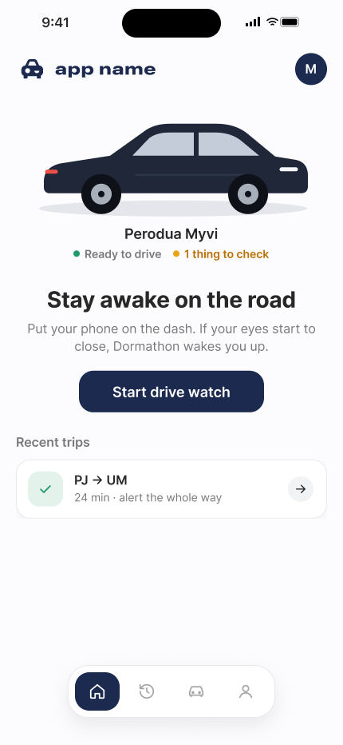
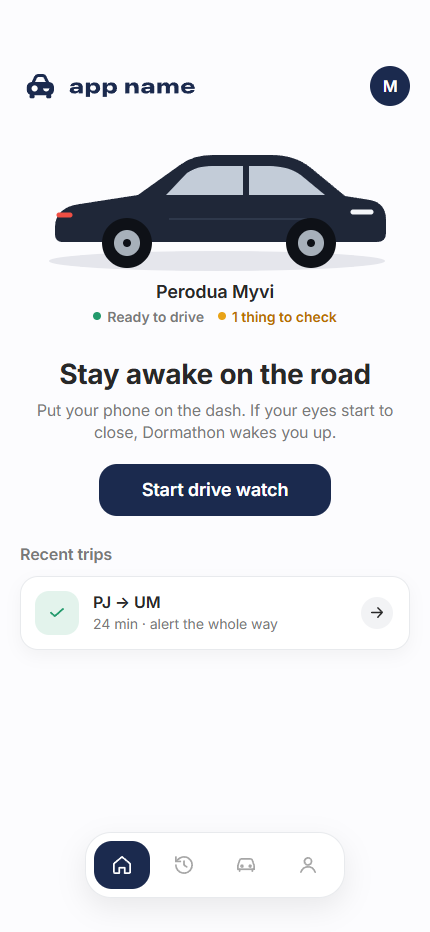
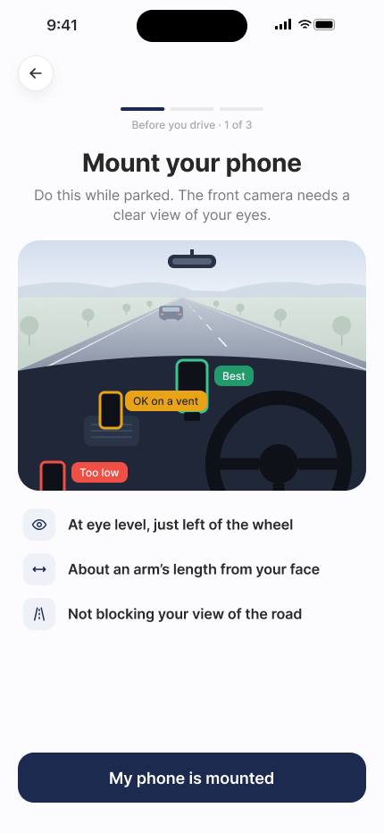
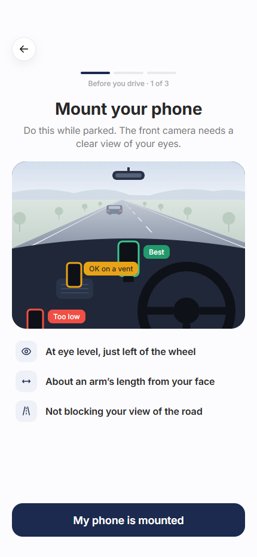
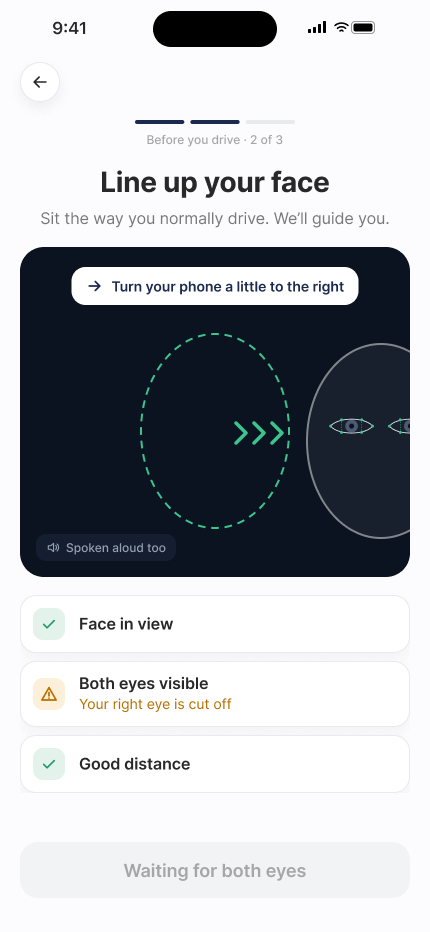
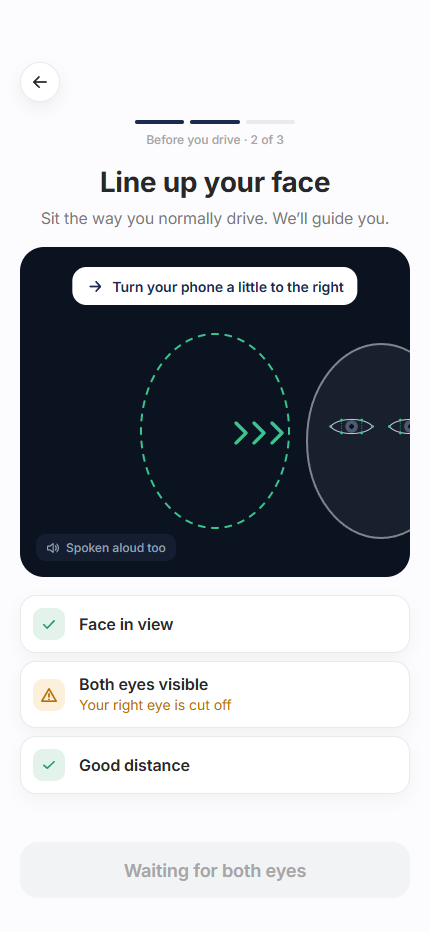
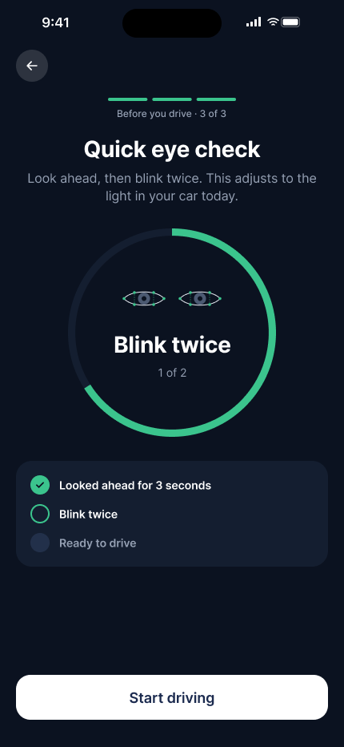
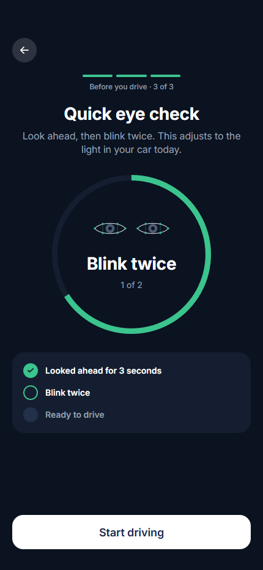
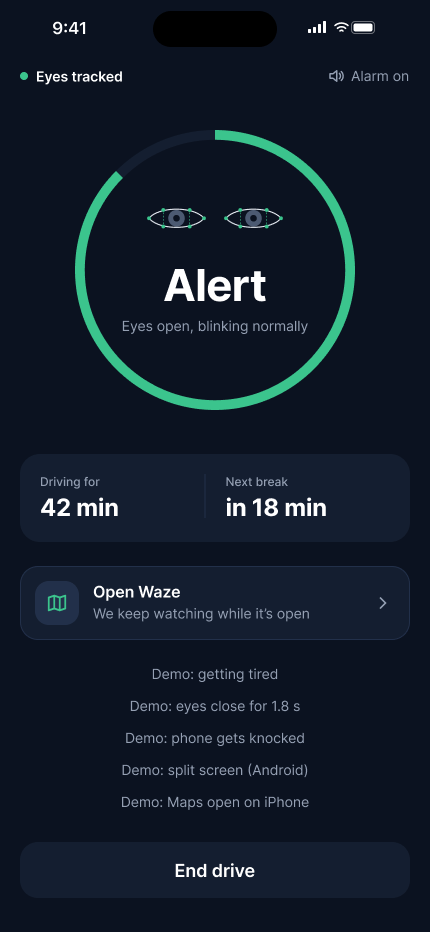
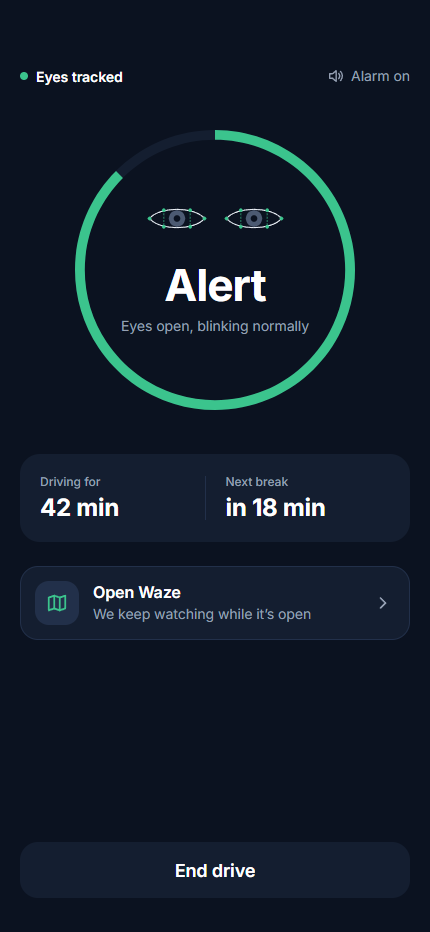
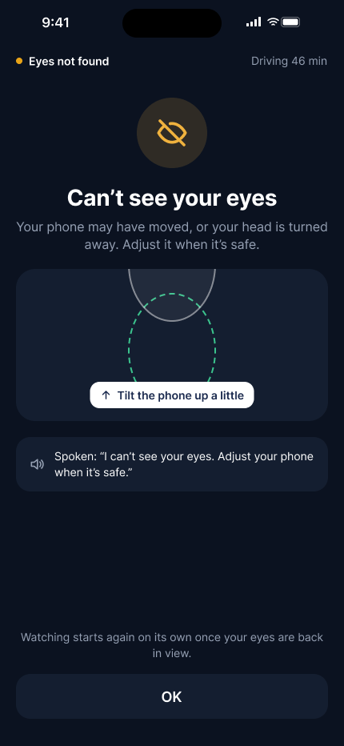
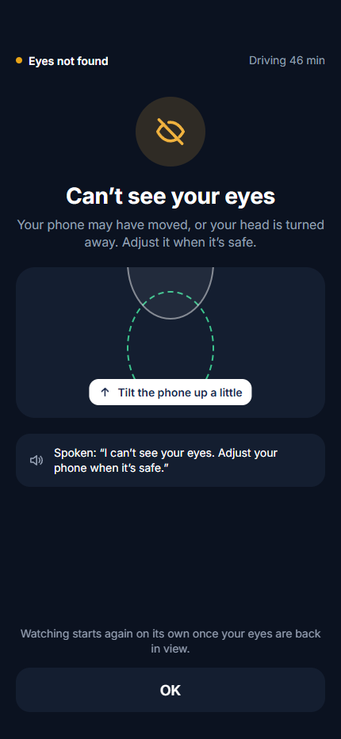
Approved difference: the app displays the existing warning Content layers that are hidden in this Figma frame. Their spacing, text and assets come from node 39:973.
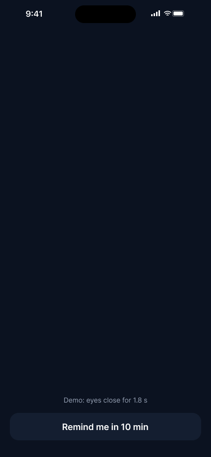
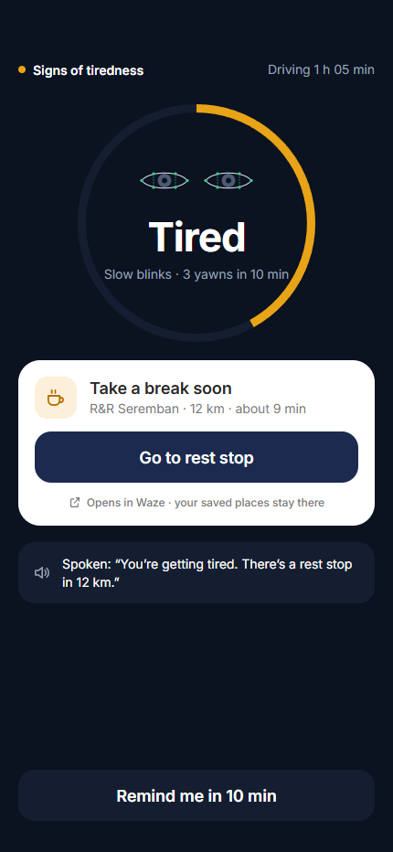
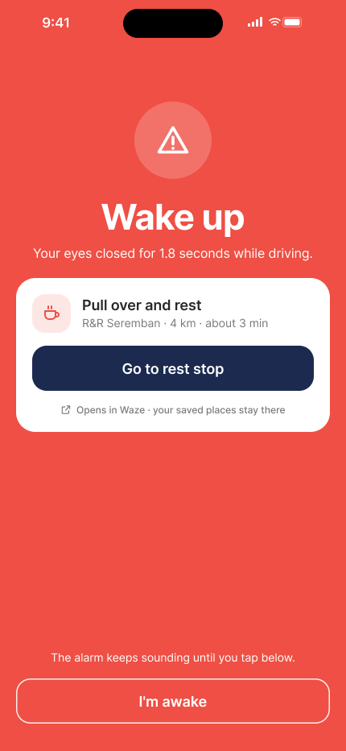
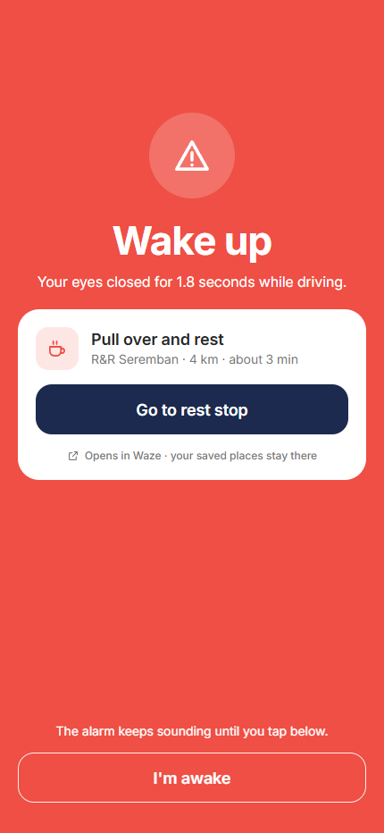
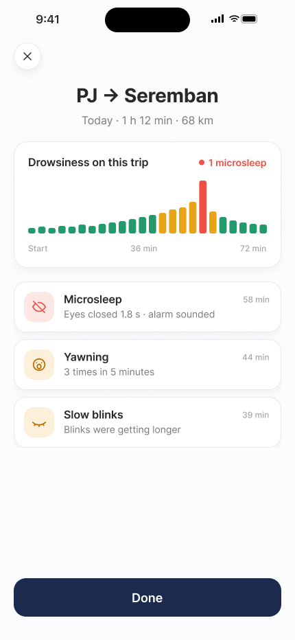
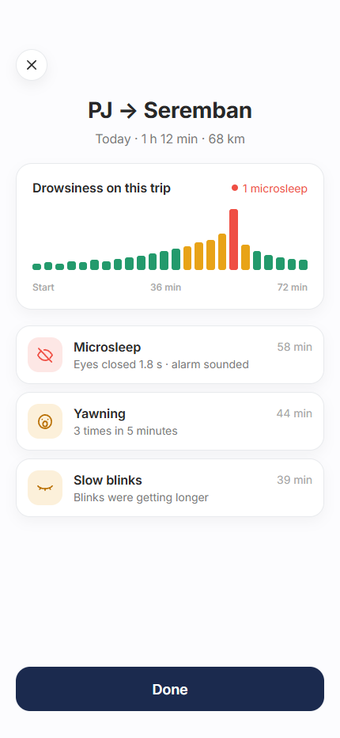
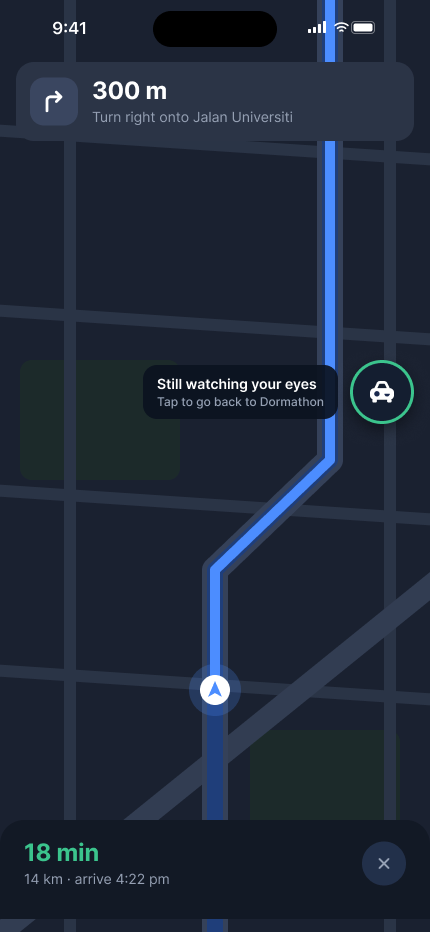
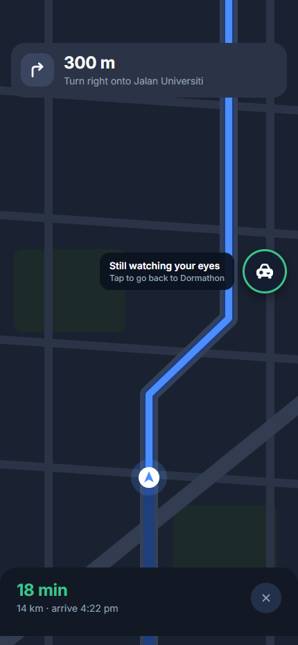
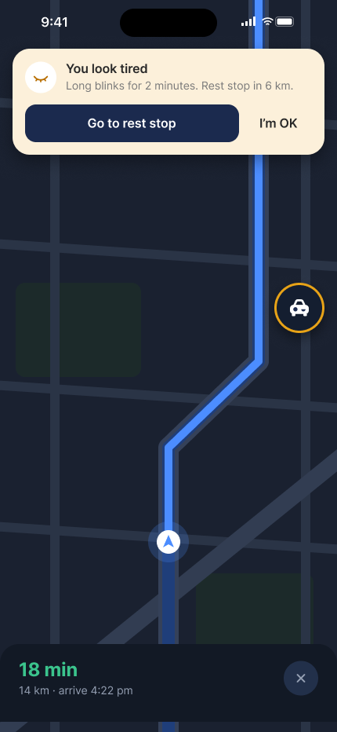
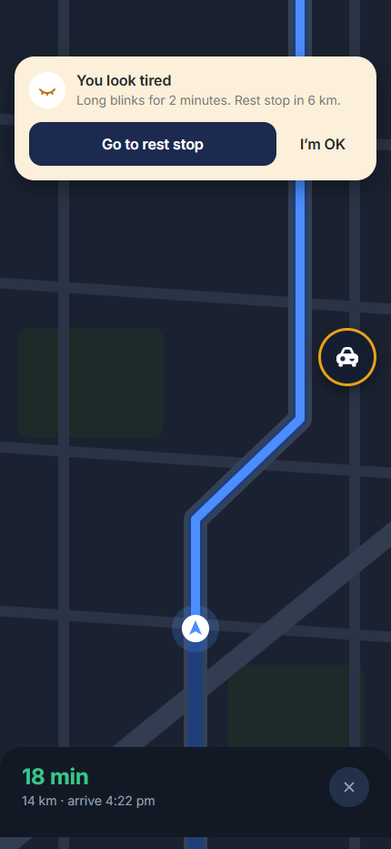